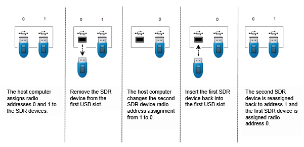
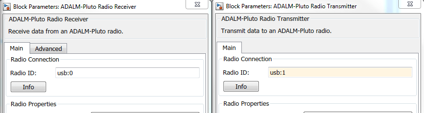

After the support package is installed, set up the two radio hardware by using the guided setup method.
Note
The two ADALM-PLUTO radios must be set up with different radio IDs.
The guided setup is recommended for Windows®, Linux®, and OS X operating systems.
Set up the first radio following the steps in Guided Host-Radio Hardware Setup.
Set up the second radio following the same steps.
Note
When working with multiple radios, if devices are inserted or removed, the host computer assignment of USB addresses might change. Any time an SDR device is inserted or removed from a USB port, the host computer polls all USB ports and assigns or reassigns the radio addresses associated with connected devices.

When operating on Windows keep these considerations in mind.
When running multiple radios on the same host in separate MATLAB® sessions, for each MATLAB session the first radio is assigned usb:0, and the ID number increments by one for subsequent radios.
Radios that are being used by one MATLAB are not seen by other MATLAB sessions. Use findPlutoRadio and check the reported serial number to identify the radios seen in a particular MATLAB session.
To ensure that all assigned radio identities remain static, do not connect or disconnect radios after SDR objects have been created. The best practice is to connect radios and create SDR objects in this order:
Clear all SDR objects.
Connect all radios.
Check to confirm that the connected radios are recognized by running this command:
findPlutoRadio
Create SDR objects.
To interface with the radio hardware, the RadioID property of the
radio object must match the radio ID of the radio hardware. Update the
RadioID property, if necessary.
When running multiple radios on the same host, the host assigns each radio a different
radio ID. When identifying the radio by USB ID, the first radio is assigned
usb:0, and the ID number increments by one for subsequent radios. For
example, to assign IDs to two radios connected on the same host computer, at the MATLAB command prompt, enter:
rx = sdrrx('Pluto','RadioID','usb:0');
tx = sdrtx('Pluto','RadioID','usb:1');The internal radio ID of each radio object, System object™, or block interacting with the radio hardware must match the radio ID assigned to the radio hardware during setup.
In these examples, the first radio, acting as a receiver, is
assigned usb:0. The second radio, acting as a transmitter,
is assigned usb:1.
Tip
Run two instances of MATLAB on the host: one for the receiver and one for the transmitter.
When operating on Windows keep these considerations in mind.
When running multiple radios on the same host in separate MATLAB sessions, for each MATLAB session the first radio is assigned usb:0, and the ID number increments by one for subsequent radios.
Radios that are being used by one MATLAB are not seen by other MATLAB sessions. Use findPlutoRadio and check the reported serial number to identify the radios seen in a particular MATLAB session.
Create a radio object for interacting with the receiver, and a radio object for interacting
with the transmitter. In both objects, update the RadioID properties
with the assigned radio ID.
RxDevice = sdrdev('Pluto'); RxDevice.RadioID = 'usb:0';
TxDevice = sdrdev('Pluto'); TxDevice.RadioID = 'usb:1';
Create a System object for interacting with the receiver,
and a System object for interacting with the transmitter. When
you create both System objects, set the corresponding RadioID property.
rx = sdrrx('Pluto','RadioID','usb:0'); tx = sdrtx('Pluto','RadioID','usb:1');
Create a block for interacting with the receiver, and a block for interacting with the transmitter. In both blocks, update the corresponding block with the matching RadioID parameter.
